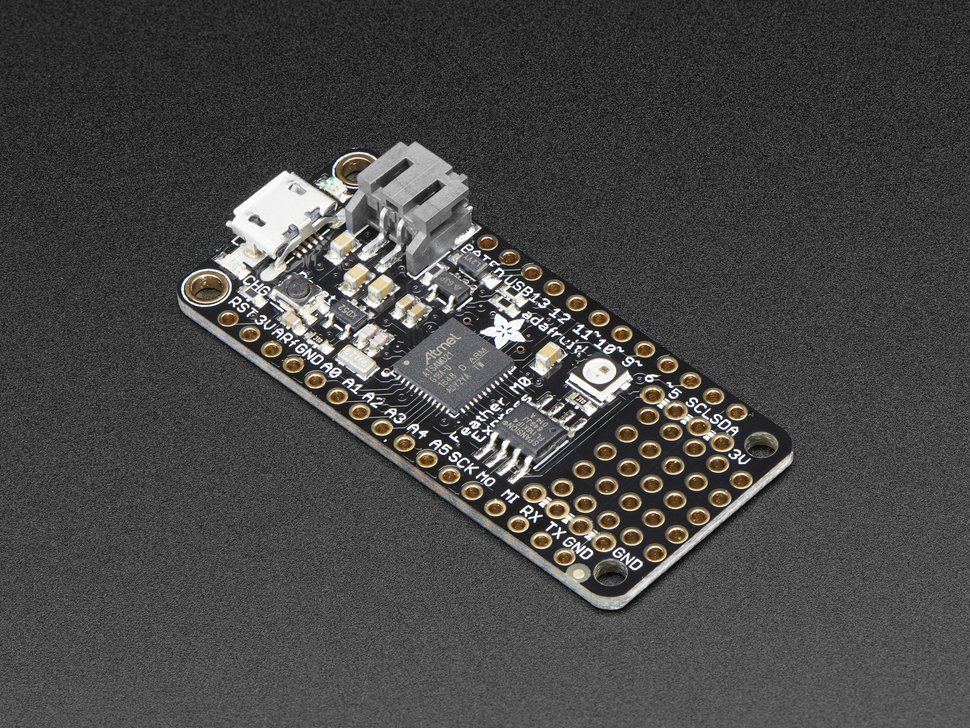
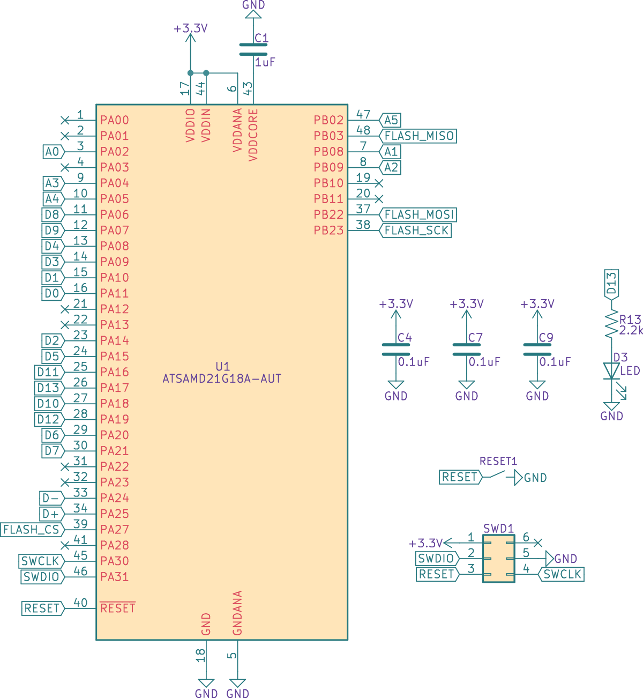
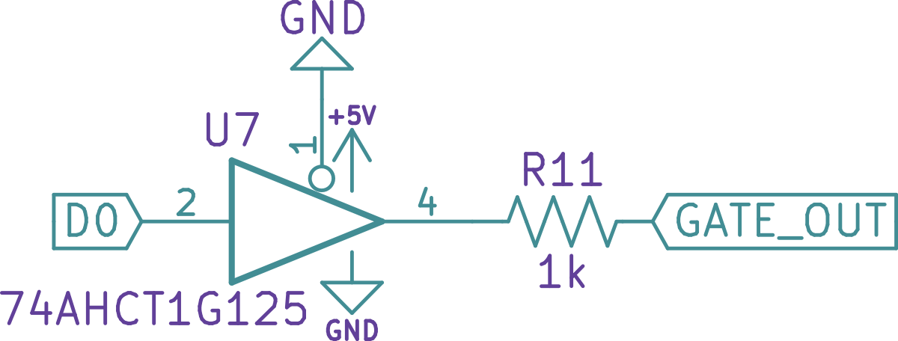
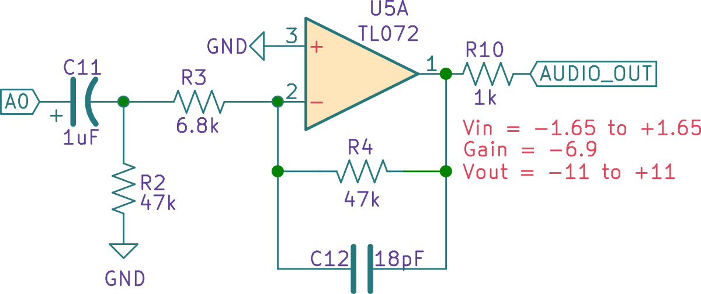

Designing Winterbloom's Big Honking Button
Winterbloom's Big Honking Button has quickly become my best seller. It's a relatively simple and silly Eurorack module that can also be used as a basic sampler. This post will explore the hardware design of Big Honking Button and discuss the different circuit designs and component selections. It should hopefully be pretty approachable even to electronics newcomers. Also, as a disclaimer: I am not an electrical engineer. I still consider myself a hobbyist, and I'm certain I made some mistakes in this design and I might not be completely correct in my analysis and descriptions here. If you notice an error, please feel free to reach out to me and let me know! I'll be happy for the opportunity to learn more.

Also, all of Big Honking Button's hardware design and firmware are open source. You can find the source files on GitHub.
Eurorack?
If you aren't familiar with Eurorack, no worries! Eurorack is a modular synthesizer format- basically, instead of having one big synthesizer you have a bunch of smaller modules and you route signals between them to control how the synthesizer works, and therefore how the synthesizer sounds. Big Honking Button is one of these modules - specifically, Big Honking Button makes sounds that can be manipulated and transformed by other modules.

A starting point
All of my projects generally start by selecting a development board (like the Arduino Uno or Teensy) that contains the hardware I need to prototype things. Since I will generally incorporate hardware from the development board into the final design, I like to choose boards that are open source and also have the minimum amount of hardware I need.

For Big Honking Button, I started with two very similar boards: The Adafruit Trinket M0 and the Adafruit Feather M0 Express. Both of these boards use the Microchip/Atmel SAM D21 microcontrollers. This chip has a few good things for this project:
- It's fast enough to run CircuitPython
- It has enough RAM to load and playback samples
- It's very cheap ($3-4 at quantity)
- It has pretty minimal support circuitry needed
- It can run without a crystal which reduces the part count and cost
- It supports external flash
All of these make it good a candidate for the Big Honking Button. I wanted Big Honking Button to be affordable and customizable, so picking a cheap micro that can run CircuitPython and needs minimal external circuitry is a big win all around.
These boards also gave me obvious selections for a few other components - most notably the 3.3v regulator and flash chip. We'll get to that later.
Designing the microcontroller section
As mentioned, the SAM D21 is actually pretty easy to work with. It mostly requires a few bypass capacitors. Here's the schematic:

- C4, C7, and C9 act as bypass capacitors. In the PCB layout, they're placed close to the three
VDDpins. - C1 acts as a bypass capacitor for the
VDDCOREsupply. This is from the microcontroller's internal voltage regulator and this part is recommended by the datasheet's schematic checklist. - D3 acts as the status LED for the microcontroller.
- SWD1 is the microcontroller's programming interface. I'm using a TagConnect header to program these.
- There's a simple reset button. In theory, you should generally add a capacitor to debounce this. In practice, it rarely makes much of a difference, so I left it off to save cost.
- I've created labels for most of the pins. These labels are based off the Feather M0 Express schematic. I did not actually use all of these pins, but it's useful to have around as I prototype and add outputs. Especially when it comes to laying out the PCB- if I find it really hard to route to one pin I can easily pick another one that suits the same purpose.
Flash
I wanted some flash memory to allow folks to store more samples on the Big Honking Button. Using the list of supported flash memory chips in CircuitPython and Octopart I selected a chip with high availability and reasonable cost: The 2MB GigaDevice GD25Q16C.
Thankfully, most flash chips have the same pinouts. This is good to know if you ever need to swap them out due to limited availability or if you want to upgrade to a chip with more capacity.
This is the schematic section for the flash chip:

This is about as standard as it comes. The flash is wired to the microcontroller via SPI. Faster/bigger chips can benefit from a quad SPI configuration, but it's really not needed here. R12 acts as the necessary pull-up resistor on FLASH_CS and is specified in the datasheet.
Power
Power in the Eurorack world is pretty interesting. A Eurorack power supply typically provides +12v, -12v, and ground connections. Because the microcontroller works at 3.3v and some of the peripherals operate at 5v (more on that later), the voltage needs to be stepped down.
Some more sophisticated and power-hungry modules will use switching DC-DC converters for this, but since Big Honking Button is a relatively simple module with very low power needs (the final revision draws just 25mA from the +12v line) I went with simple linear regulators.
Here's the schematic for the power section:

The first thing to note is that there are reverse protection diodes, D1 and D2. Even though I used keyed connectors for the power cable, it costs me barely anything to include these and they're the least I can do to protect the module from being connected incorrectly. These diodes are 1N4148. These have more than enough current capacity (literally 10x as much) and could likely be replaced with "smaller" diodes, but these diodes are factory parts with my contract manufacturer (and therefore inexpensive) so it doesn't really matter to me.
Now, the regulators. The first regulator is a very run-of-the-mill LM7805 5v linear regulator. It steps +12v down to +5v. This part is honestly the most "careless" choice in the design - I picked it solely because it's simple, I'm familiar with it, and it's cheap. There are certainly better parts that could've been used. For example, the LM2936 provides enough current capacity (50mA) and has a much lower quiescent current. However, since Eurorack is generally not battery powered I am not quite as concerned with shaving off mAs. One benefit of the LM7805 is that it requires very simple ceramic capacitors for stable operation. C3, C5, and C17 fill that role.
The second regulator is a Diodes Incorporated AP2112K-3.3. It steps down +5v to +3.3v. This regulator was actually chosen because it's very commonly used in Adafruit boards and I didn't have a good reason to go against their suggestion. It has pretty good accuracy (±1.5%) and great load (0.2%/A) and line (0.02%/V) regulation. Since it's downstream from the 5v regulator, it also benefits from the line conditioning done by that regulator. This is all more than good enough for the digital circuits that use it. Like the LM7805, it requires only simple ceramic input and output capacitors and C2, C6, and C8 fill that role.
Gate in
The gate in circuitry fills two roles:
- It translates the logic level from Eurorack gate levels (5v to 10v) to a level that's suitable for the microcontroller (3.3v)
- Sets the input impedance for the inputs. In the Eurorack world, it's good to have this relatively high. From what I can tell, most manufacturers use 100k as the input impedance.
Here's the schematic:

This uses a common NPN transistor, the 2N3904, to perform logic level conversion. R8 sets the input impedance to 100kΩ. R9 serves as the load resistor for the transistor as well as a pull-up for the microcontroller pin. When the gate in voltage is less than ~0.7v, the transistor switches off and the pull-up gives the microcontroller 3.3v - logic high. When the gate in voltage is greater than ~0.7v, the transistor switches on and creates a lower resistance path to ground so the microcontroller sees 0v - logic low. Note that this arrangement is inverting - gate in high is logic low, and gate in low is logic high.
Gate out
The gate out circuitry fills two roles:
- It translates the logic level from the microcontroller's 3.3v to 5v to fit with Eurorack standards.
- It sets the output impedance. In the Eurorack world, it's good to have this around ~1kΩ.
Here's the schematic:

This uses a 74AHCT1G125 single bus driver. These chips are great for shifting logic levels and providing a buffered output and are extremely cheap. I could've used a transistor, but I would likely need to add additional circuitry to buffer the output and ensure the 1kΩ output impedance. R11 sets the output impedance.
Audio out
The SAM D21 has a single 10-bit DAC. This DAC outputs 0v to 3.3v, so I needed to do a few things to it to make it suitable for Eurorack:
- Remove the DC offset and center it around 0v.
- Amplify it to Eurorack levels which is 10Vpp.
This is done using an inverting op amp. The inversion is okay since this is audio and there aren't any strict requirements for staying in phase. Here's the schematic:

C11 and R2 form a passive high pass filter which effectively blocks the DC offset before passing it on to the rest of the circuit. Its cut-off frequency is around 3Hz.
The amplifier itself is a TL07x. This was chosen because it's cheap, ubiquitous, and extremely well suited for audio. R3 and R4 set the overall gain of the amplifier. The gain is -(47kΩ / 6.8kΩ) = -6.9. With an input of 1.65Vpp (which is 3.3v centered around 0v) it gives an output of around 11Vpp, which is more than enough. I could have set this lower, however, keep in mind that real world resistors vary and real world output from the microcontroller is generally a little lower than 3.3v, so having this headroom is a good thing.
C12 acts as a stabilizing capacitor to keep the op amp from ringing. It forms an active low pass filter with R4 and it's cut-off frequency is around 188kHz which should remove any nasty high frequencies. It's totally reasonable to pick a higher valued capacitor here to lower the bandwidth even further, a capacitor of around 150pF would set the cutoff to 22kHz - just above the limit of human hearing.
Finally, R10 sets the output impedance to the expected 1kΩ.
CV in
The most clever part of Big Honking Button's circuitry is the CV input. This is an analog input. The SAM D21 has several ADC inputs and they all operate from 0v to 3.3v. So this input needs to handle the nominal -2v to +2v range and scale it to 0v to 3.3v. It also needs to deal with voltages outside of that range, since in Eurorack CV can vary anywhere from -10v to +10v.
The circuit used in Big Honking Button is adapted from Mutable Instrument's designs. It consists of a active summing amplifier that's configured to both scale and offset the input voltage. Here's the schematic:

This is a little complicated so stay with me here. I'll take this one section at a time and introduce the components and their roles and then discuss how it all fits together.
Starting from the left there is a -10v reference. This is created using an LM4040-10v zener diode. R1 provides the required current for the zener diode to work. It provides about 1mA which is well within the zener diode's operating range of 100uA to 15mA. This -10v reference is important as it serves as one of the two inputs into our summing amplifier. More on that in a second.
Next is the two inputs to the summing mixer. R5 sets the input impedance to 100kΩ - exactly what we need for Eurorack. The rest of the resistors in the amp are based on that value. R6 sets the gain for the -10v reference. R7 is the feedback resistor that sets the overall gain for the amplifier, and C15 forms an active low pass filter to prevent ringing just like in the audio out section.
This circuit accomplishes scaling and offsetting by way of the value of R6 - the gain for the -10v reference. Applying the inverting amplifier transfer function -(Vin * Rf / Rin) = Vout we get -(-10v * 82kΩ / 510kΩ) = 1.608v. This means whatever input is coming into CV in is added to 1.608v.
That fixed voltage plus the CV in ends up in the range of 0v to 3.3v for the input range of -2v to +2v. Applying the same transfer function for the minimum and maximum input voltage and summing them with the fixed voltage from the regulator shows this:
-(-2v * 82kΩ / 100kΩ) = 1.64vso1.64v + 1.608v = 3.248v-(2v * 82kΩ / 100kΩ) = -1.64vso1.64v - 1.608v = 0.032v
Which fits nicely inside of the 0v to 3.3v range needed by the microcontroller.
There's one final piece of the puzzle - how does this avoid over/under voltage? Since Eurorack signals can go from -10v to +10v, it is entirely possible for someone to plug something outside of the -2v to +2v valid range. This is accomplished by using an op amp with the power supply limited to 0v to 3.3v. In this case, I'm using the MCP6001. The MCP6001 is a great choice because it's low power (so doesn't mind running off of just 3.3v) and is rail-to-rail (so it has no issues getting its output close to the 0v and 3.3v power rails). The inverting summing mixer arrangement combined with the op amp's supply limiting the output voltage effectively limits the voltage seen by the microcontroller.
Selecting appropriate resistor values for a given range is a little complex. You can derive them analytically, but I wrote a small Python script to run through the standard resistor values and output a set of candidates for any given range.
Wrapping up
So that's all of major circuit components for Big Honking Button. Again, I want to re-iterate that I'm still a hobbyist here. I don't pretend to completely understand this myself, but hopefully I'm able to share enough that you could adapt these circuits for your own use if you run into similar needs.
I also want to note that I didn't get these all right the first time. These took experimentation and adaptation to get working right. A lot of the values were derived empirically through trial and error. Making mistakes is part of the process!